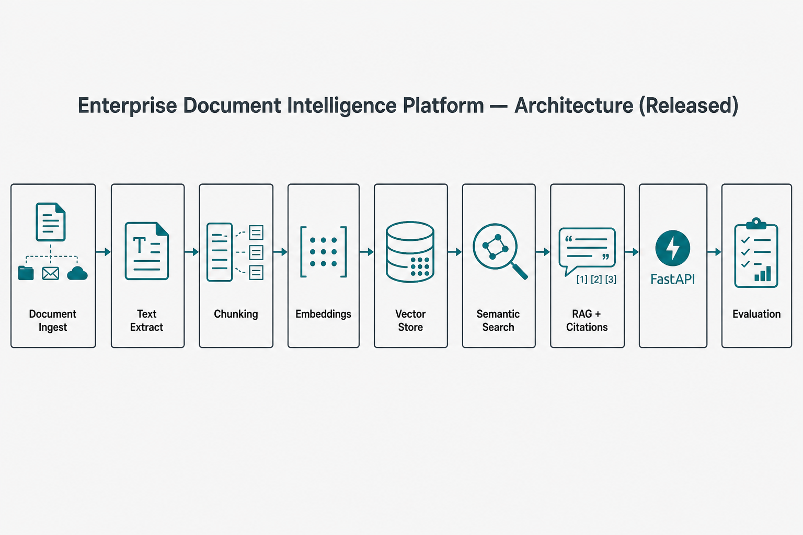

Mohammad Ahmadian · Applied AI / LLM Engineer
Semantic search and cited answers — not keyword-only search.
Ingest → extract → chunk → embed → retrieve → cite → API

Sample corpus — methodology demo
Also ingest, search, extract · OpenAPI docs
github.com/ahmadian-dev · extractive answers by default